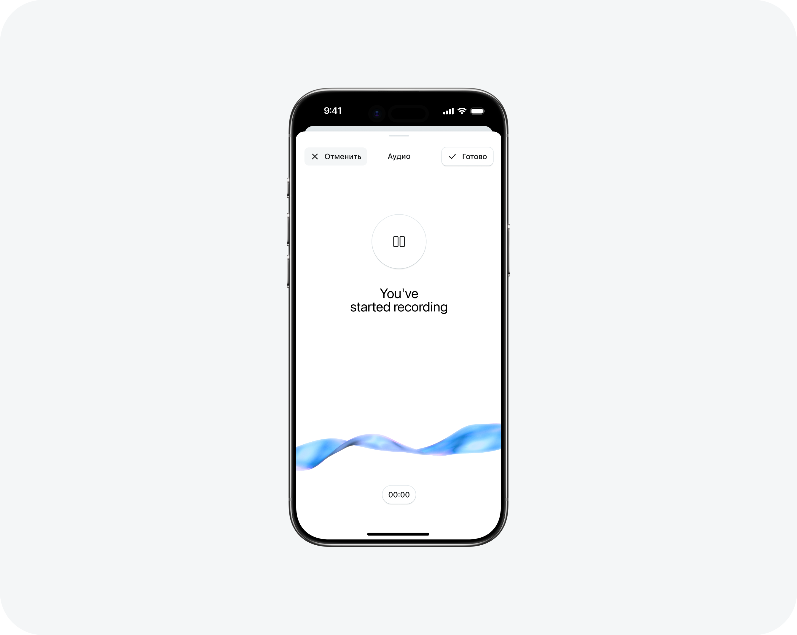
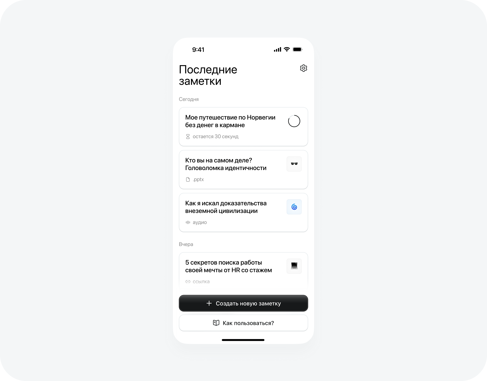
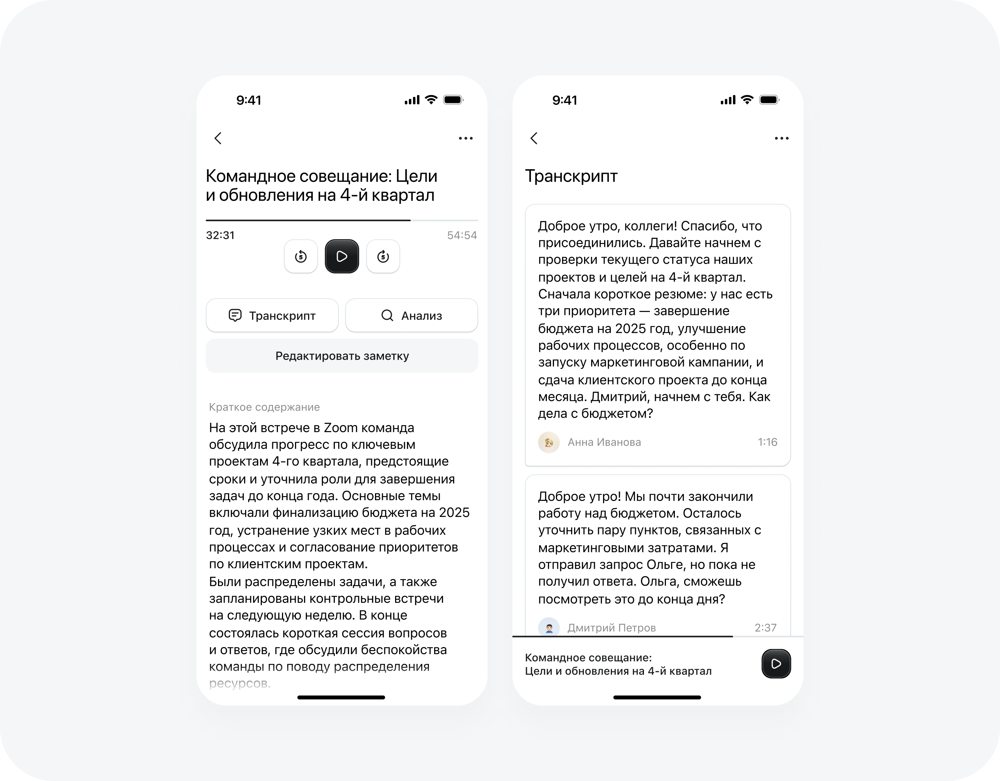
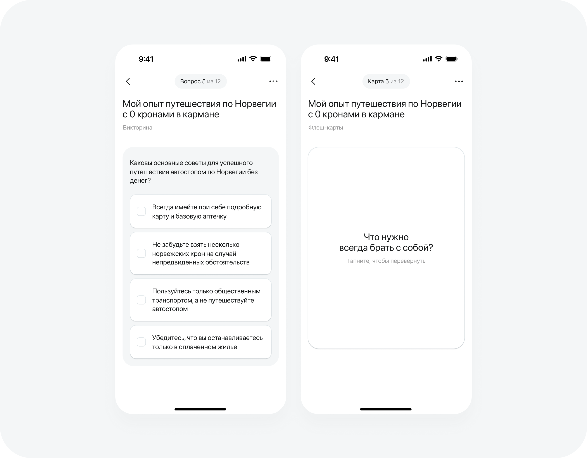
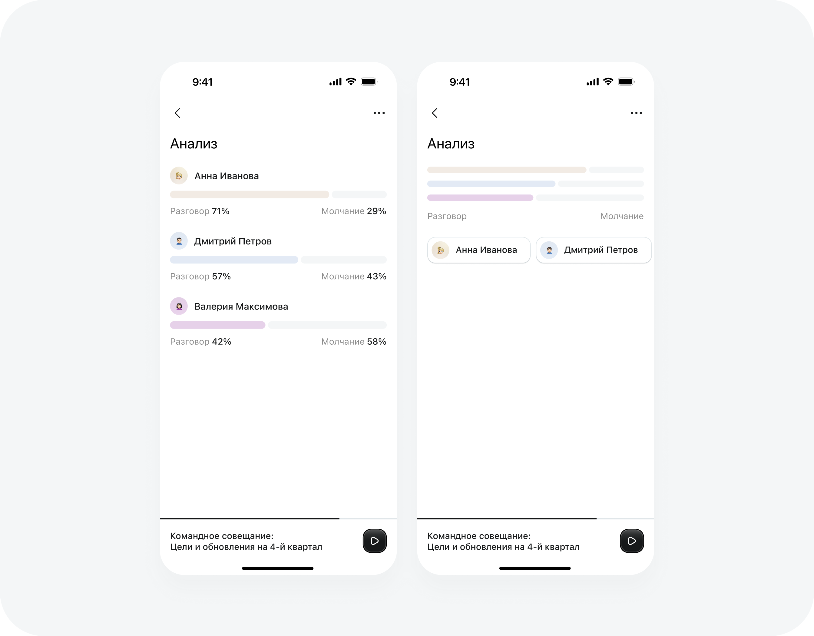
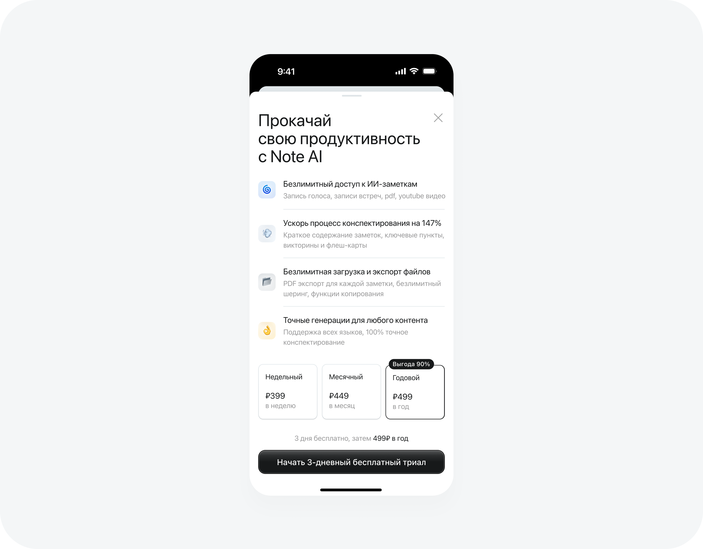

ИИ-инструмент
для создания заметок
Проблема
Люди не могут быстро превращать неструктурированную информацию из разных форматов в краткие, понятные и полезные заметки.
Решение
Приложение AI Note, которое автоматически преобразует информацию из любых форматов (видео, аудио, документы, текст) в структурированные, краткие и полезные заметки без участия пользователя.

Гипотеза
Хранение заметок в формате карточек на главном экране обеспечивает пользователю быстрый доступ к информации.

Гипотеза
Автоматически зафиксированный в письменном виде текст сообщения, интервью, лекции или разговора экономит время пользователя.

Гипотеза
Викторины и флеш-карты превращают заметки в интерактивное обучение, помогая быстрее и надёжнее запоминать информацию.

Гипотеза
Анализ аудио с разбивкой по участникам и отображением доли их речи и молчания позволит пользователям объективно оценивать динамику общения и уровень вовлечённости участников, что поможет улучшать качество встреч и коммуникации в команде.

Гипотеза
Если на пейволле сделать акцент на измеримой выгоде, конкретных сценариях использования и ощущении ценности через “безлимитный доступ”, а также предложить низкий порог входа через 3-дневный бесплатный триал и визуально выделить выгодный годовой план, то это увеличит конверсию в подписку, так как пользователи быстрее поймут пользу продукта и снизят риск принятия решения.
